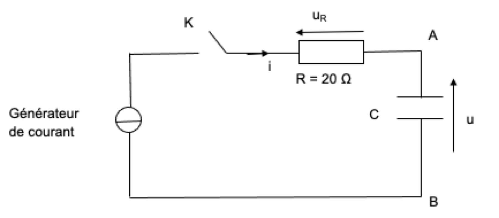
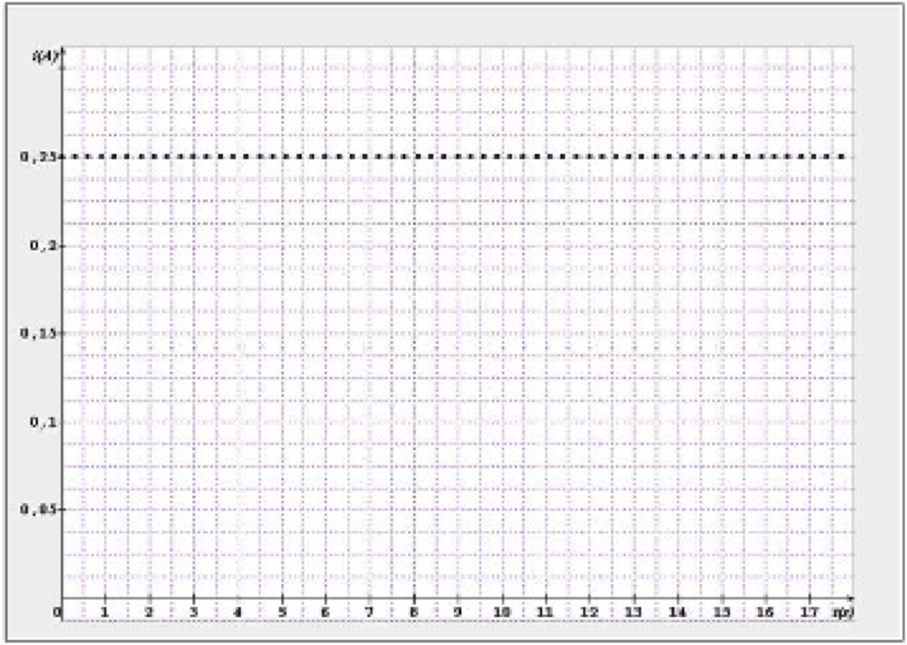
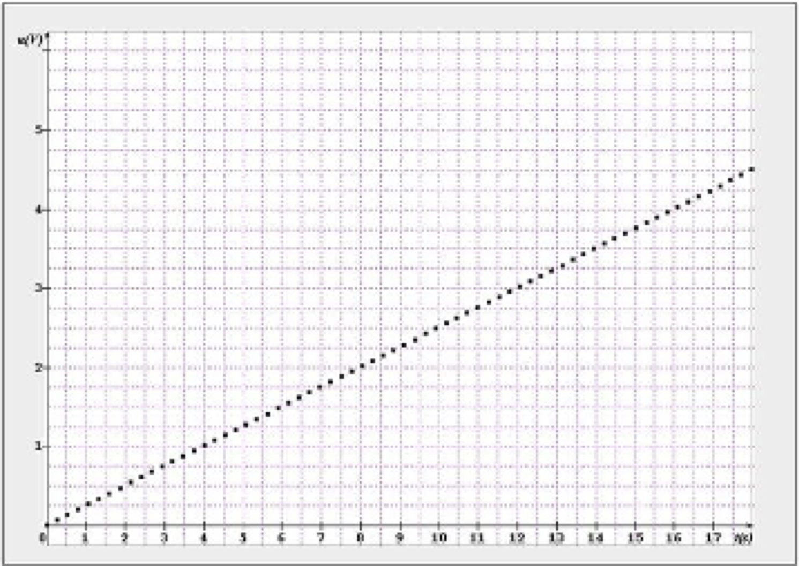
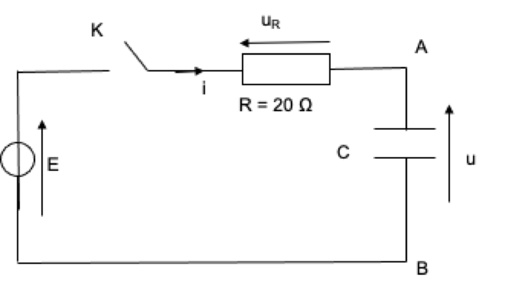
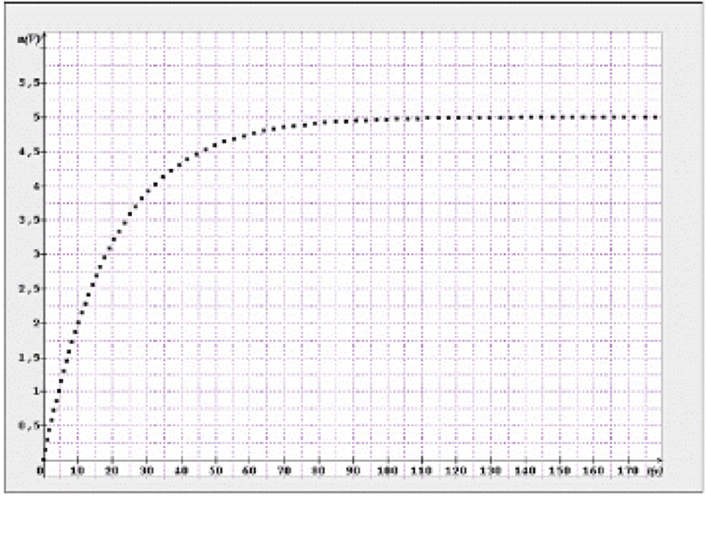
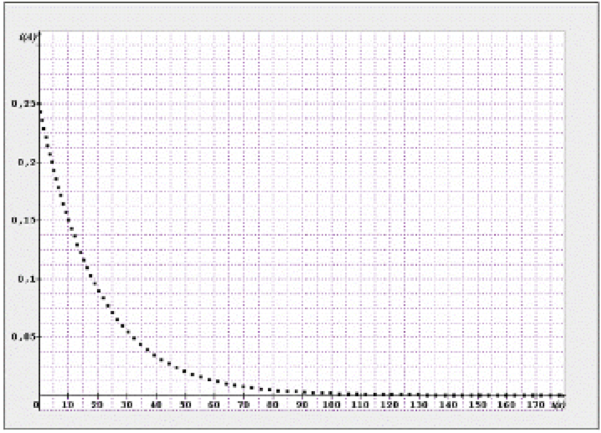

Promis à un grand avenir, les super condensateurs sont des dispositifs de stockage de l’énergie, intermédiaires entre les accumulateurs électrochimiques et les condensateurs traditionnels. Leurs applications, qui n’en sont qu’à leurs débuts, touchent de nombreux domaines tant dans l’électronique de grande diffusion que dans l’électronique de puissance, notamment en ouvrant des perspectives intéressantes dans le domaine des véhicules hybrides.
Charge d’un condensateur à courant constant
Une première méthode consiste à charger le condensateur à l’aide d’un générateur délivrant un courant d’intensité I constant, selon le montage suivant.
À la date $t = \pu{0 s}$, on ferme l’interrupteur $K$ et on enregistre, à l’aide d’un système informatique, les variations au cours du temps de la tension $u_R$ aux bornes du conducteur ohmique de résistance $R = \pu{20 \Omega}$ et de la tension $u$ aux bornes du condensateur. Après traitement, on obtient les courbes ci-après :
Graphique : $i$ en fonction du temps. 
Graphique : $u$ en fonction du temps. 
-
Montrer que le graphe $i(t)$ est obtenu à partir de l’enregistrement de $u_R(t)$.
-
Utiliser l’un des graphes pour déterminer la relation numérique entre la tension $u$ aux bornes du condensateur et le temps. Justifier le calcul.
-
En considérant qu’à $t = \pu{0 s}$ le condensateur est déchargé, donner l’expression littérale de la charge $q_A$ portée par l’armature $A$ du condensateur en fonction du temps.
-
Calculer le quotient $\dfrac{q_A}{u}$. Que représente-t-il ?
Charge d’un condensateur soumis à un échelon de tension
Une autre manière de déterminer la valeur de la capacité d’un condensateur, consiste à charger ce dernier avec un générateur de tension constante $E = \pu{5,0 V}$ associé à une résistance $R = \pu{20 \Omega}$, en série avec le condensateur selon le schéma suivant :
On ferme l’interrupteur $K$ à $t = \pu{0 s}$, un dispositif informatique (acquisition et traitement) permet d’obtenir les variations de l’intensité dans le circuit et de la tension aux bornes du condensateur au cours du temps. On obtient les deux courbes ci-dessous :
Graphique : $u$ en fonction du temps. 
Graphique : $i$ en fonction du temps. 
-
D’après les graphes, quelles sont les valeurs de $u$ et $i$ lorsque le condensateur est chargé ?
-
Rappeler l’expression de la constante de temps $\tau$ du circuit. La déterminer graphiquement en précisant la méthode.
-
En déduire la valeur de la capacité $C$ du condensateur. Comparer avec la valeur obtenue à la question 4.
-
En respectant les notations du montage, montrer que la tension $u$ vérifie l’équation différentielle : $$E = RC \, \dfrac{ \mathrm{d} u}{ \mathrm{dt} } + u$$
-
La solution de cette équation différentielle est de la forme $u(t) = E\, (1 – e^{-t/\tau} )$ où $\tau$ est la constante de temps du circuit. Montrer que pour $t = 5\tau$, le condensateur est quasiment chargé. Le vérifier graphiquement.